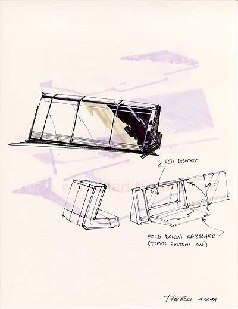

This desktop system combines
the module add-on approach with the added convenience and styling of a
fold-down keyboard which would turn on the system and reveal its built-in
LCD display screen. The systems were far ahead of their
time in looks, styling, form and functionality.